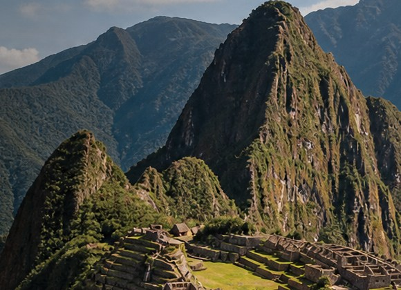
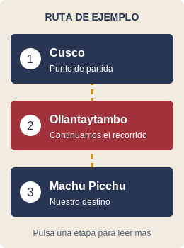

NUESTRO DESTINO
Tour a Machu Picchu
Una propuesta para disfrutar de la historia, los paisajes y la cultura andina.

Un viaje para conocer
Con TreKero te invitamos a descubrir Machu Picchu y su entorno.
- Observar los paisajes de las montañas.
- Conocer las construcciones de piedra.
- Disfrutar la visita con respeto por el lugar.
Los servicios, precios, horarios e ingresos deben confirmarse antes de una reserva. Esta página no anuncia disponibilidad real.
Explora una ruta de ejemplo
Haz clic o toca una etapa de la imagen. Se resaltará su explicación en la tabla.
[SUPUESTO] Recorrido propuesto para el trabajo académico. El dibujo es un esquema: no es un mapa geográfico ni muestra todas las conexiones.

También puedes ir a: Cusco · Ollantaytambo · Machu Picchu.
| Etapa | Lugar | Actividad propuesta |
|---|---|---|
| 1 | Cusco | Inicio del recorrido y coordinación del viaje. |
| 2 | Ollantaytambo | Punto de conexión en la ruta propuesta. |
| 3 | Machu Picchu | Visita al destino principal del tour. |
| 4 | Retorno | Regreso según los servicios acordados. |
En el celular, desplaza la tabla hacia los lados si es necesario.